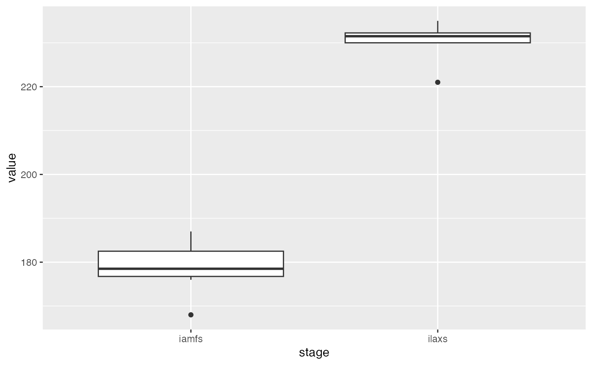
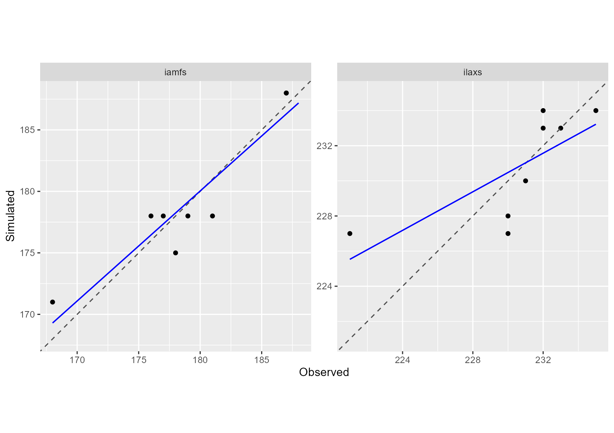

vignettes/AgMIP_Calibration_Phenology_protocol.Rmd
AgMIP_Calibration_Phenology_protocol.RmdThis document presents how the AgMIP phase III protocol, designed to calibrate phenology of crop models, can be easily implemented using CroptimizR and CroPlotR packages.
This protocol is described in detail in Wallach et al (2022).
Its objective is to improve crop model parameters values using calibration for prediction of crop phenology.
Here is a brief description of its different steps:
The crop model input data used in this example comes from a maize crop experiment (see description in Wallach et al., 2011). To illustrate the calibration procedure, julian days of two phenological stages were simulated from this dataset on 8 different environments (called situations in CroptimizR language) and then used as observations, after adding some random errors.
The STICS crop model is used in this example. Initialization steps
required by the use of this model (definition of the
model_options argument of the estim_param
function) are hidden in this example for sake of brevity. They are
detailed in the vignette (https://SticsRPacks.github.io/CroptimizR/articles/Parameter_estimation_simple_case.html).
The observations are provided here in the obs_list
object, in the format required by CroptimizR, i.e. a named list of
data.frame.
In this example, the variables corresponding to the two observed stages considered are called “iamfs” and “ilaxs”. They correspond to the julian days (from the beginning of the sowing year) of “end juvenile” and “maximum LAI” stages as defined in the STICS crop model.
print(obs_list)## $`bo96iN+`
## Date iamfs ilaxs
## 1 1996-10-15 168 230
##
## $bou00t1
## Date iamfs ilaxs
## 1 2000-11-01 181 221
##
## $bou00t3
## Date iamfs ilaxs
## 1 2000-11-01 179 230
##
## $bou99t1
## Date iamfs ilaxs
## 1 1999-11-05 187 233
##
## $bou99t3
## Date iamfs ilaxs
## 1 1999-11-05 187 232
##
## $`lu96iN+`
## Date iamfs ilaxs
## 1 1996-10-16 177 232
##
## $lu96iN6
## Date iamfs ilaxs
## 1 1996-10-16 176 235
##
## $`lu97iN+`
## Date iamfs ilaxs
## 1 1997-10-10 178 231The 8 situations are called here bo96iN+,
bou00t1, bou00t3, bou99t1,
bou99t3, lu96iN+, lu96iN6 and
lu97iN+.
Let’s plot the values of these observations:
obs_df <- dplyr::bind_rows(obs_list) %>% tidyr::pivot_longer(
cols = c("iamfs", "ilaxs"), names_to = "stage")
ggplot(obs_df, aes(x = stage, y = value)) + geom_boxplot()
The “end juvenile” stage occurred around day 180 after sowing, while the “maximum LAI” stage occurred around day 230 after sowing.
The whole list of parameters to estimate and their lower and upper
bounds (noted resp. lb and ub) must be
provided in the param_info argument of the
estim_param function.
In this example, we will consider 5 parameters of the STICS crop
model: stlevamf, stamflax, tdmin,
stressdev and tdmax.
param_info <- list(
lb = c(stlevamf = 100, stamflax = 300, tdmin = 4, stressdev = 0, tdmax = 25),
ub = c(stlevamf = 500, stamflax = 800, tdmin = 8, stressdev = 1, tdmax = 32)
)Note that -Inf or Ìnf can be used for,
respectively, lower and upper bounds. In that case, initial values must
be provided for the corresponding parameters (see
? estim_param for more details).
The list of candidate parameters must be provided in the
candidate_param argument of
the estim_param function. Note that, as prescribed in the
AgMIP protocol, this list must be ordered, from those thought to be the
most important to those thought to be the least important.
In this example, 3 parameters were considered as candidates.
candidate_param <- c("tdmin", "stressdev", "tdmax")The parameters not included in candidate_param but
included in param_info will be considered as the nearly
additive parameters, as defined in the protocol. In this example,
stlevamf and stamflax are thus the nearly
additive parameters that will be estimated at any step.
Default values for the non-estimated parameters and for the candidate
parameters can be defined in the forced_param_values
argument of the estim_param function.
forced_param_values <- c(tdmin = 5.0, stressdev = 0.2, tdmax = 30.0)These values will be used at each step for which these parameters are not estimated.
Following the AgMIP phase III protocol, different numbers of repetition of the minimization are prescribed: 10 for the estimation of the nearly additive parameters and 5 for the estimation of the candidate parameters.
A simple call to the estim_param function allows running
the whole parameter selection and minimization procedure defined in the
AgMIP phase III protocol.
Compared to the simple example presented in https://SticsRPacks.github.io/CroptimizR/articles/Parameter_estimation_simple_case.html,
it is important here to define the crit_function argument
of the estim_param function. Indeed, the objective function
to minimize in AgMIP phase III protocol is the Ordinary Least Squares,
implemented in the function crit_ols, which is not the
default criterion in estim_param.
Note also the use of the arguments forced_param_values
and candidate_param.
By default, the information criterion used for the parameter
selection is the BIC, as advised by Wallach
et al (2022). Note, however, that other criteria can be used (AIC
and AICc) using the info_crit_func argument.
res <- estim_param(obs_list = obs_list,
crit_function = crit_ols,
model_function = model_wrapper,
model_options = model_options,
optim_options = optim_options,
forced_param_values = forced_param_values,
candidate_param = candidate_param,
param_info = param_info)At the end of the execution, some information such as the selected step number, the list of selected parameters, their estimated values and some stats about the execution time are printed in the R console:
...
# ----------------------
# End of parameter selection process
# ----------------------
#
# Selected step: 2
# Selected parameters: stlevamf,stamflax,tdmin
# Estimated value for stlevamf : 321.18
# Estimated value for stamflax : 589.73
# Estimated value for tdmin : 7.96
#
# A table summarizing the results obtained at the different steps is stored in C:/Users/sbuis/AppData/Local/Temp/RtmpwRzZkP/data-master/study_case_1/V9.0/param_selection_steps.csv
# Graphs and detailed results obtained for the different steps can be found in C:/Users/sbuis/AppData/Local/Temp/RtmpwRzZkP/data-master/study_case_1/V9.0/results_all_steps/step_# folders.
#
# Average time for the model to simulate all required situations: 4.1 sec elapsed
# Total number of criterion evaluation: 806
# Total time of model simulations: 3293 sec elapsed
# Total time of parameter estimation process: 3314 sec elapsed
# ----------------------The list returned by the estim_param function contains
the results obtained for the selected step and a data.frame, called
param_selection_steps, providing detailed results of the
protocol. The element param_selection_steps gives, for each
minimization step, the list of candidate parameters, their initial and
final values and the values of the Sum of Squares and information
criteria. The selected step is indicated in the last column. It is also
stored in csv format for sake of readability (file
“param_selection_steps.csv” in getwd() folder or in
optim_options$out_dir folder, if provided to
estim_param).
| Estimated.parameters | Initial.parameter.values | Final.values | Initial.Sum.of.squared.errors | Final.Sum.of.squared.errors | BIC | Selected.step |
|---|---|---|---|---|---|---|
| stlevamf, stamflax | 356.22, 522.43 | 404.58, 739.23 | 2960 | 147 | 41.03 | |
| stlevamf, stamflax, tdmin | 404.58, 739.23, 7.67 | 321.18, 589.73, 7.96 | 4242 | 91 | 36.13 | X |
| stlevamf , stamflax , tdmin , stressdev | 321.18, 589.73, 7.96, 1.00 | 321.18, 589.73, 7.96, 1.00 | 91 | 91 | 38.90 | |
| stlevamf, stamflax, tdmin , tdmax | 321.18, 589.73, 7.96, 30.20 | 321.18, 589.73, 7.96, 31.07 | 91 | 91 | 38.90 |
In this example, the selected parameters are “stlevamf”, “stamflax” and “tdmin” for which the lowest value of BIC has been obtained.
The list returned by the estim_param function is also
stored in a file (“optim_results.Rdata”).
The standard results and diagnostics plots generated by
estim_param for all the different steps are stored in the
subfolder “results_all_steps”.
First the model wrapper has to be run using the estimated values of
the selected parameters, and the default values for the others, using
its param_values argument.
param_values <- c(res$final_values, res$forced_param_values)
sim_after_optim <- model_wrapper(param_values = param_values,
model_options = model_options,
var = c("iamfs", "ilaxs"))Then, the simulated versus observed values can be plotted using the CroPlotR plot function:
plot(sim_after_optim$sim_list, obs = obs_list, type = "scatter")
MSE and its components can be calcuted for each variable using the CroPlotR summary function:
## # A tibble: 2 × 7
## group situation variable MSE Bias2 SDSD LCS
## <chr> <chr> <chr> <dbl> <dbl> <dbl> <dbl>
## 1 Version_1 all_situations iamfs 4.38 0.0156 0.0637 4.92
## 2 Version_1 all_situations ilaxs 7 0.0625 1.14 6.78